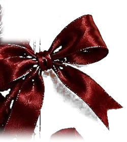

Davetiye

Kına Gecemize Davetlisiniz
Paylaşılan en güzel heyecanlarımızın ardından, şimdi bu özel gecede buluşma vakti...
Ne duraysunuz?
Haydee kına geceme!
13 Kasım 2026 Cuma, saat 18.30
Kına gecemiz hanımlara özeldir.
Fadime & Faik ARI
Gelinin Ailesi
Huriye & İsmail KÖSE
Damadın Ailesi
Geri Sayım
Kına Gecesine Kalan Süre
Takviminize eklemeyi unutmayın
Açılan ekranda Ekle ya da Kaydet’e dokunmanız yeterli.
Başka bir takvim mi kullanıyorsunuz? Google Takvim · Apple, Outlook (.ics)
Buluşma Noktamız
Kına Gecesi Mekânı
Fürüzan Davet Evi
Şehit Polis Mustafa Öztürk Cad. C Blok No: 4A
Kirazlıkçay, Çarşamba / Samsun
Fotoğrafçımız Sizsiniz
Anılarınızı Paylaşın
Kına gecemizde fotoğrafçı olmayacak. Çektiğiniz fotoğraf ve videoları buradan bize gönderin; isterseniz birkaç satır da dilek bırakın.
Gönderdiğiniz fotoğraf ve videoları yalnızca Elif ile Yunus görebilir; sayfada başka misafirlere gösterilmez.
Gönderdikleriniz
Bu telefondan gönderdikleriniz. Bunları yalnızca siz ve Elif ile Yunus görebilir; yanlışlıkla gönderdiğiniz bir dosyayı açıp silebilirsiniz.
Sevgiyle Yazılanlar
Dilek Defteri
Kına gecemiz için yazılan güzel dilekler burada; her biri için çok teşekkür ederiz.
Dilekler şu anda yüklenemiyor. Birazdan kendiliğinden tekrar denenecek.